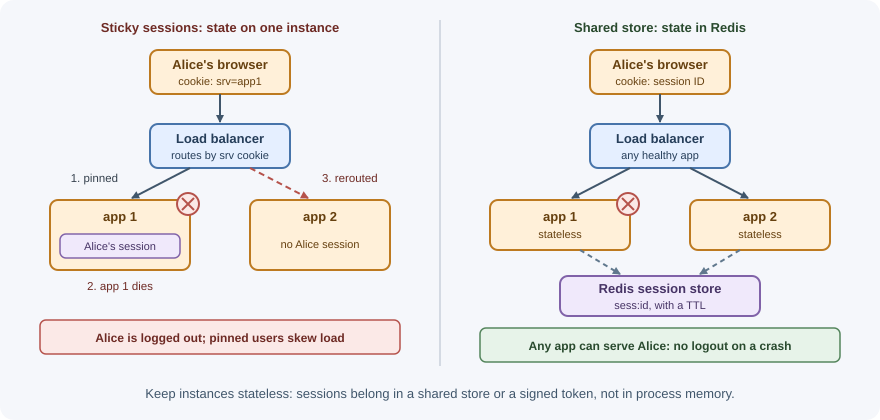

From One Server to Many¶
Almost every service starts on one machine: Nginx, a Node.js API, a database, a folder of uploads, and a crontab, all on one VPS. That is the right choice at first. This lesson follows TaskFlow API from that single server to a multi-region deployment, one stage at a time, and shows what each stage fixes and what it breaks next. Most of what breaks is state hidden on the instance, so the second half of the lesson goes through each kind of state (sessions, uploads, in-process caches, scheduled jobs, WebSocket connections, counters) and where it has to live instead. It ends with the trade-off between scaling up and scaling out, with numbers.
The next lesson, load balancers in depth, covers the component that sits in front of every stage from the third one onwards.
Why it matters¶
Adding a second instance is the moment hidden assumptions surface. The code worked for a year because every request reached the same process: the session was in its memory, the uploaded avatar was on its disk, and the nightly email ran once because there was one crontab. With two instances behind a load balancer, users are logged out at random, avatars are missing half the time, and the nightly email goes out twice. None of this shows up in unit tests, and all of it shows up within minutes in production.
Knowing the stages also stops you from paying for the wrong one. A team with a slow query does not need a second region; a team whose only VM restarts during every deploy does not need Kubernetes first. Each stage costs money and adds failure modes, so the useful skill is recognizing which limit you have actually hit.
Real-world usage¶
- The Twelve-Factor App. Factor VI, Processes, states that "twelve-factor processes are stateless and share-nothing", allows memory and the filesystem only as "a brief, single-transaction cache", says that sticky sessions "are a violation of twelve-factor and should never be used or relied upon", and recommends a datastore with time expiration, such as Memcached or Redis, for session state.
- Express. The guide Production best practices: performance and reliability warns that separate app instances "do not share the same memory space", so "you cannot maintain state in the application code", recommends Redis for session data, and notes that this caveat "applies to essentially all forms of horizontal scaling". It also recommends running Express behind a reverse proxy and spreading traffic with a load balancer.
- express-session. The
express-session README says its
default
MemoryStore"is purposely not designed for a production environment": it "will leak memory under most conditions, does not scale past a single process". - Stack Overflow. Nick Craver's Stack Overflow: The Architecture - 2016 Edition lists the hardware behind the site at the time: 11 IIS web servers (9 of them serving production), 4 SQL Servers, 2 Redis servers, 3 tag engine servers, 3 Elasticsearch servers, and 4 HAProxy load balancers. A small fleet of powerful, well-tuned machines goes a long way before anything more elaborate is needed.
Popular tools and providers: Nginx, HAProxy, and cloud load balancers;
Redis and Valkey (self-run or as a managed service such as Amazon
ElastiCache or Google Cloud Memorystore); connect-redis for
express-session; Amazon S3, Google Cloud Storage, and Azure Blob Storage
for uploads; the Socket.IO Redis adapter; node-cron, BullMQ, Kubernetes
CronJobs, and Amazon EventBridge Scheduler for scheduled work; and PM2 or
the Node.js cluster module for using every CPU core of a machine.
How it works¶
Six stages of growth¶
![Diagram: six panels show TaskFlow growing; stage 1, one VPS runs Nginx, the Node.js API, MongoDB, cron, and files, and a reboot or full disk is an outage; stage 2 moves MongoDB to a managed service but the app server is still a single point of failure; stage 3 puts a load balancer in front of three API instances with sessions in Redis, and state left on instances breaks; stage 4 adds a CDN and a Redis cache, bringing stale data and invalidation bugs; stage 5 spreads the load balancer, two API instances per zone, and a database primary and synchronous standby across two zones, leaving region outages and distant users; stage 6 adds global DNS or anycast in front of two regions with asynchronous database replication, costing replication lag, write conflicts, and spend.](../one-to-many-stages.svg)
| Stage | What you add | What it fixes | What breaks or appears next |
|---|---|---|---|
| 1. One server | One VPS with Nginx, Node.js, MongoDB, uploads on disk, a crontab | Nothing to coordinate; cheapest | Any reboot, deploy restart, full disk, or hardware fault is an outage; the database and the API compete for memory and CPU |
| 2. Separate database | A managed database (or a dedicated database server) | Backups, failover, and patching handled for you; the app server becomes disposable | The app server is still one machine; every query now crosses the network |
| 3. Load-balanced app tier | A load balancer and two or more identical instances | No single app server; rolling deploys; more capacity | Anything stored on an instance: sessions, uploads, local caches, cron jobs, WebSocket rooms, counters |
| 4. Cache and CDN | Redis for hot reads; a CDN for static files and public responses | Lower latency and database load | Stale data, invalidation bugs, personalized responses cached for the wrong user |
| 5. Multiple zones | Load balancer nodes, instances, and database replicas in two or three Availability Zones | Survives a data center failure | Capacity must cover a lost zone; cross-zone latency and data transfer charges |
| 6. Multiple regions | A second region and global traffic management | Survives a region outage; nearby service for distant users | Replication lag, write conflicts, data residency, roughly double the infrastructure |
Stage 2: separating the database. A managed database removes the most dangerous job from the app server, but three things change:
- Latency per query. Each query now pays a network round trip, well
under a millisecond inside one zone. An endpoint that runs 50 sequential
queries notices; batch them (
$in,bulkWrite) or run them in parallel. - Connections multiply. Every instance opens its own connection pool.
The MongoDB Node.js driver's default
maxPoolSizeis 100 connections per server perMongoClient, so ten instances can open 1,000 connections to the primary. Size pools on purpose (see the worked example below). - Network security. The database must not be reachable from the internet: private subnets, security groups, and TLS (see cloud building blocks).
Stage 3: adding the load balancer. Instances must be identical (built from one image, configured by environment variables), expose a readiness endpoint, and shut down gracefully, as described in deploying backend services. Behind a TLS-terminating load balancer, the app must also trust exactly one proxy hop to see the real client IP and scheme (see TLS termination). The rest of this lesson is about the hidden state this stage exposes.
Stage 4: caches and a CDN trade freshness for speed; the rules are in cache fundamentals and HTTP and CDN caching.
Stages 5 and 6 are covered in multi-AZ and multi-region architecture and global traffic management. Scaling the database itself (read replicas, sharding) and moving slow work to queues are covered in database scaling and message queues.
Statelessness: what must leave the instance¶
A stateless instance holds nothing that another instance cannot rebuild or look up. It may cache things to go faster, but losing it must not lose data, log anyone out, or change what a user sees.
![Diagram: six rows map instance state to its fix; sessions in process memory log users out after a reroute and move to a Redis store or a short-lived token; uploads on local disk go missing on other instances and move to object storage with presigned URLs; in-process caches make instances show different data and become a Redis cache with short local TTLs; a cron job in every instance runs once per instance and needs a per-run claim or one scheduler; WebSocket rooms in memory make events reach only some users and need a Redis pub/sub adapter; rate-limit counters in memory multiply the limit by the instance count and move to Redis or the edge.](../moving-state-off-instances.svg)
Sessions¶

| Option | How it works | Strengths | Weaknesses |
|---|---|---|---|
In-memory sessions (MemoryStore) |
Session data in the process | No setup | Lost on every restart; not shared; leaks memory |
| Sticky sessions | The load balancer pins a client to one instance by cookie or IP hash | No code change | Uneven load; sessions lost when that instance dies or is deployed; fights autoscaling |
| Shared session store | Session ID in a cookie, data in Redis with a TTL | Any instance serves any request; survives deploys | Redis becomes a critical dependency and must be replicated |
| Signed tokens (JWT) | The client carries signed claims; no server lookup | No session storage at all | Hard to revoke before expiry; keep them short-lived with refresh tokens |
A shared store is the usual default for browser sessions. The trade-offs of tokens are covered in sessions, cookies, and JWT. Sticky sessions still have legitimate uses (Socket.IO's HTTP long-polling fallback needs them, and they keep a warm per-instance cache warm), but never rely on them to keep data that matters.
Uploaded files¶
A file saved to ./uploads on instance 1 does not exist on instance 2, and
disappears with the instance. Uploads belong in object storage: the API
issues a short-lived presigned URL, the browser uploads directly to the
bucket, and the API stores only the object key. Files are then served
through a CDN or through presigned download URLs. The details are in
file storage and uploads
and object and file storage.
In-process caches¶
A small in-memory cache per instance is fine for data that rarely changes (feature configuration, lookup tables) if its TTL is short, because each instance invalidates on its own schedule and two instances can disagree for up to one TTL. Shared data that changes (a task, a user's permissions) belongs in Redis, where one delete invalidates it for everyone. If you need both, publish invalidation messages over Redis pub/sub so every instance drops its local copy.
Scheduled jobs¶
A crontab or in-process scheduler runs on every instance, so three instances send the daily digest three times. The options:
| Approach | How | Trade-off |
|---|---|---|
| One designated instance | An environment flag enables the scheduler on one instance only | Simple; jobs silently stop when that instance is gone |
| Claim each run | Every instance tries SET key NX with an expiry; the key holds the job name and the scheduled time |
Any instance can run the job; needs Redis, and a Redis outage skips runs |
| A separate scheduler | Kubernetes CronJob, Amazon EventBridge Scheduler, or one worker deployment | Jobs leave the web tier; one more component to run (see stateful workloads and Jobs) |
| A queue with repeatable jobs | BullMQ job schedulers or similar; workers consume the jobs | Retries, history, and visibility; a queue to operate |
Two details make the claim approach correct. First, the key must include
the scheduled time (daily-digest:2026-11-13T07:00:00.000Z), so every
instance computes the same key for the same run, even if their clocks
differ by a few seconds. Second, the claim must not be deleted when the
job finishes. If it were, an instance whose clock is ten seconds late would
fire after the first one finished, find no key, and send the digest again.
Let the key expire on its own, well after any plausible clock skew.
Claiming a run ("exactly one instance starts this occurrence") is different from mutual exclusion ("never two copies at the same time"), which needs a lock released by its owner. Redis locks expire, so a job that runs longer than its lease, or pauses for a long garbage collection, can lose the lock while still running. Keep jobs short, renew leases, or use a queue for work that must never overlap.
WebSockets and fan-out¶
Each WebSocket connection lives on one instance. When a task changes, instance 1 can only push the update to the sockets it holds, so users connected to instance 2 never see it. The fix is a backplane: every instance publishes events to a shared channel (Redis pub/sub, Redis Streams, or a message broker) and delivers them to its own sockets. For Socket.IO this is an adapter such as the Redis adapter.
Two more consequences:
- Socket.IO's HTTP long-polling transport sends several requests per session, and all of them must reach the process that created the session, so long-polling requires sticky sessions. Clients that use only the WebSocket transport do not.
- Long-lived connections stay where they are while load changes. New instances get no existing sockets, so use a least-connections algorithm, and expect reconnect storms when an instance is drained (see load balancers in depth and rainbow deployments in advanced deployment patterns).
Counters, rate limits, logs, and configuration¶
- Rate limits and counters kept in memory are per instance: a limit of 100 requests per minute becomes 300 with three instances. Keep counters in Redis or enforce limits at the edge (see rate limiting and throttling).
- Logs written to local files vanish with the instance. Write structured logs to stdout and ship them to a central store (see structured logging).
- Configuration and secrets must be identical across instances: one artifact, configured by the environment. A session secret that differs per instance logs users out as surely as an in-memory store.
Scaling up compared with scaling out¶
| Scale up (vertical) | Scale out (horizontal) | |
|---|---|---|
| How | A bigger instance | More instances behind a load balancer |
| Code changes | None | The app must be stateless |
| Ceiling | The largest machine your provider sells | Usually the database or another shared dependency |
| Failure impact | One machine is the whole service | Losing one of N instances removes 1/N of capacity |
| Resizing | Usually a restart, so downtime unless a second instance exists | Add or remove instances while serving |
| Node.js specifics | One Node process runs JavaScript on one core; use cluster, PM2, or several containers to use more cores |
Small instances, one or two processes each |
Scaling up is often the right first move: it needs no code change and buys time to remove state. Scaling out is what gives availability, because it is the only option where one failure does not take everything down.
A worked example for TaskFlow API:
Measured: one instance (2 vCPU, two Node processes) serves 300 req/s at 60% CPU
Peak traffic: 1,200 req/s
Instances for peak: 1,200 / 300 = 4
Plus one for failures/deploys: 4 + 1 = 5
After losing one of five: 1,200 / 4 = 300 req/s each (the measured safe level)
Utilization after losing k of N equal instances: u_after = u x N / (N - k)
3 instances at 60%, lose 1: 60% x 3 / 2 = 90% (close to saturation)
5 instances at 60%, lose 1: 60% x 5 / 4 = 75%
Database connections:
5 instances x 2 processes x 100 (driver default maxPoolSize) = 1,000 possible connections
With a 600-connection budget: maxPoolSize = 600 / 10 = 60 per process
The connection line is the one teams forget: autoscaling from 5 to 15 instances triples the possible connections to a database that did not grow. How spare capacity must be spread across zones is covered in multi-AZ and multi-region architecture.
When to use and when not to use¶
| Situation | Do this next | Not yet |
|---|---|---|
| Low traffic, brief deploy downtime is acceptable | Stay on one server; automate backups and deploys | Load balancers, clusters, or Kubernetes |
| Deploys and reboots cause outages users notice | Two instances behind a load balancer, with state moved out | A second region |
| One instance's CPU is saturated and the app is still stateful | Scale up while you remove state | Sticky sessions as a crutch for scaling out |
| The database is saturated (CPU, connections) | Indexes, query fixes, caching, read replicas | More app instances, which add connections |
| A zone outage would break your availability target | Multiple zones with capacity for a lost zone | Multi-region |
| Distant users see high latency, or data must stay in a country | A CDN first, then a region near those users | Active-active writes without a measured need |
Practical examples¶
Sessions in Redis with express-session¶
// src/session.js: sessions in Redis, so any instance can serve any request
import session from "express-session";
import { RedisStore } from "connect-redis";
import { createClient } from "redis";
export async function sessionMiddleware() {
const redis = createClient({ url: process.env.REDIS_URL });
redis.on("error", (err) => console.error("redis:", err.message));
await redis.connect();
return session({
store: new RedisStore({ client: redis, prefix: "taskflow:sess:" }),
name: "tf.sid",
secret: process.env.SESSION_SECRETS.split(","), // first one signs, all verify
resave: false,
saveUninitialized: false,
rolling: true, // extend the session on activity
cookie: {
httpOnly: true,
secure: process.env.NODE_ENV === "production", // needs "trust proxy" behind the LB
sameSite: "lax",
maxAge: 8 * 60 * 60 * 1000, // 8 hours; connect-redis uses it as the TTL
},
});
}
// src/app.js
import os from "node:os";
import express from "express";
import { sessionMiddleware } from "./session.js";
export const app = express();
app.set("trust proxy", 1); // the load balancer is one hop away
app.use(await sessionMiddleware());
if (process.env.NODE_ENV !== "production") {
// Development check: the counter keeps rising whichever instance answers
app.post("/debug/visits", (req, res) => {
req.session.visits = (req.session.visits ?? 0) + 1;
res.set("X-Instance", os.hostname());
res.json({ visits: req.session.visits });
});
}
connect-redis10 exportsRedisStoreas a named export and works with the officialredisclient. Sessions live undertaskflow:sess:<id>with a TTL taken from the cookie's expiry.secretaccepts a list. The first secret signs new cookies and all of them verify, so you can rotate secrets without logging everyone out. Every instance must get the same list.- With
secure: true, express-session sets the cookie only when it sees HTTPS. Behind a TLS-terminating load balancer that requiresapp.set("trust proxy", 1); without it, production sessions silently never stick.
Running each scheduled job once across instances¶
node-cron 4.6 can coordinate runs across instances. With distributed:
true, every instance still runs the schedule, but before each run it asks
a run coordinator whether it should run. The key it passes is the task
name plus the scheduled time, identical on every instance.
// src/jobs/scheduler.js: every instance runs the schedule; one instance runs each fire
import os from "node:os";
import cron from "node-cron";
import { createClient } from "redis";
import { sendDailyDigests } from "./daily-digest.js";
const redis = createClient({
url: process.env.REDIS_URL,
disableOfflineQueue: true, // fail fast while Redis is down instead of queueing the SET
});
await redis.connect();
cron.setRunCoordinator({
// key looks like "daily-digest:2026-11-13T07:00:00.000Z" on every instance
async shouldRun(key, ttlMs) {
const claimed = await redis.set(`cron:${key}`, os.hostname(), {
condition: "NX", // only the first instance succeeds
expiration: { type: "PX", value: ttlMs }, // the claim expires on its own
});
return claimed === "OK";
},
// No onComplete that deletes the key: a late instance must still lose the claim.
});
cron.schedule("0 7 * * *", sendDailyDigests, {
name: "daily-digest",
timezone: "UTC",
distributed: true,
distributedLease: 10 * 60 * 1000, // far longer than any clock skew between instances
noOverlap: true,
});
If Redis is unreachable, the SET fails at once (because of
disableOfflineQueue; by default node-redis would queue it until Redis
returns), node-cron skips the run (it fails closed), and it
emits an execution:skipped event, so a missed digest is possible but a
duplicate is not. Alert on skipped runs. Without a coordinator, node-cron's
default reads NODE_CRON_RUN, which you set to true on exactly one
instance: the designated-instance approach from the table above.
For work that must never run twice at the same time, use a lock that only its owner can release:
// src/jobs/lock.js: mutual exclusion with an owner token
import { randomUUID } from "node:crypto";
const RELEASE_IF_OWNER = `
if redis.call("GET", KEYS[1]) == ARGV[1] then
return redis.call("DEL", KEYS[1])
end
return 0`;
export async function withLock(redis, name, leaseMs, work) {
const key = `lock:${name}`;
const token = randomUUID();
const acquired = await redis.set(key, token, {
condition: "NX",
expiration: { type: "PX", value: leaseMs },
});
if (acquired !== "OK") return { ran: false };
try {
return { ran: true, result: await work() };
} finally {
// Delete only our own lock; it may have expired and been taken by someone else.
await redis.eval(RELEASE_IF_OWNER, { keys: [key], arguments: [token] });
}
}
The lease must be longer than the work. If it expires first, a second instance can take the lock while the first is still running, so this pattern limits overlap; it does not make it impossible.
Real-time events across instances with Socket.IO¶
// src/realtime.js: board events reach every client, whichever instance holds its socket
import { createServer } from "node:http";
import { Server } from "socket.io";
import { createClient } from "redis";
import { createAdapter } from "@socket.io/redis-adapter";
const pubClient = createClient({ url: process.env.REDIS_URL });
const subClient = pubClient.duplicate();
await Promise.all([pubClient.connect(), subClient.connect()]);
const httpServer = createServer();
export const io = new Server(httpServer, {
adapter: createAdapter(pubClient, subClient),
transports: ["websocket"], // no long-polling, so no sticky sessions are needed
});
io.on("connection", (socket) => {
// Check that the user may read the board before joining, in real code
socket.on("board:join", (boardId) => socket.join(`board:${boardId}`));
});
// Any instance calls this after a task changes; Redis relays it to the others.
export function publishTaskUpdate(task) {
io.to(`board:${task.boardId}`).emit("task:updated", task);
}
httpServer.listen(3001);
Clients must also connect with transports: ["websocket"]. If you keep the
long-polling fallback for networks that block WebSockets, enable sticky
sessions at the load balancer instead.
A three-instance test environment¶
Running three instances locally flushes out hidden state before production does:
# compose.yaml: three API instances behind Nginx, to find hidden state early
services:
api:
build: .
environment:
NODE_ENV: development
REDIS_URL: redis://redis:6379
MONGODB_URI: mongodb://mongo:27017/taskflow
SESSION_SECRETS: local-only-change-me
deploy:
replicas: 3
depends_on: [redis, mongo]
lb:
image: nginx:1.30
ports:
- "8080:80"
volumes:
- ./deploy/nginx-local.conf:/etc/nginx/conf.d/default.conf:ro
depends_on: [api]
redis:
image: redis:8
mongo:
image: mongo:8
# deploy/nginx-local.conf: round robin over every "api" container
upstream taskflow_api {
zone taskflow_api 64k;
resolver 127.0.0.11 valid=5s; # Docker's embedded DNS server
server api:3000 resolve; # one upstream entry per container (nginx 1.27.3+)
}
server {
listen 80;
location / {
proxy_pass http://taskflow_api;
proxy_set_header Host $host;
proxy_set_header X-Forwarded-For $proxy_add_x_forwarded_for;
proxy_set_header X-Forwarded-Proto $scheme;
}
}
// scripts/check-stateless.mjs: 30 requests with one session through the load balancer
const base = process.argv[2] ?? "http://localhost:8080";
const perInstance = new Map();
let cookie;
for (let i = 1; i <= 30; i += 1) {
const res = await fetch(`${base}/debug/visits`, {
method: "POST",
headers: cookie ? { cookie } : {},
});
cookie ??= res.headers.get("set-cookie")?.split(";")[0];
const { visits } = await res.json();
const instance = res.headers.get("x-instance");
perInstance.set(instance, (perInstance.get(instance) ?? 0) + 1);
if (visits !== i) {
console.error(`request ${i} on ${instance}: expected visits=${i}, got ${visits}`);
process.exit(1);
}
}
console.log("requests per instance:", Object.fromEntries(perInstance));
console.log(perInstance.size > 1 ? "session shared across instances" : "only one instance answered");
docker compose up -d --build
node scripts/check-stateless.mjs http://localhost:8080
# requests per instance: { 'a1f3c9e2b7d4': 10, '7d20e4c1a9b8': 10, '3b9c51f0e2a6': 10 }
# session shared across instances
The resolve parameter makes Nginx re-resolve api and pick up every
container as it starts or stops, which needs nginx 1.27.3 or later in the
open-source build. Switch SESSION_SECRETS to a different value in one
container, or remove the Redis store, and the script fails on the second or
third request: exactly the bug users would have hit in production.
Best practices¶
- Scale up first when it buys time, but make the app stateless before you need to scale out.
- Build every instance from one artifact and configure it only through the environment.
- Keep sessions in a replicated shared store or short-lived tokens; do not rely on sticky sessions for correctness.
- Put uploads in object storage, logs on stdout, and counters in Redis or at the edge.
- Give every scheduled job one owner: a per-run claim, a separate scheduler, or a queue.
- Add a pub/sub backplane before running real-time features on more than one instance.
- Budget database connections across all instances and processes, and revisit the budget when autoscaling limits change.
- Keep at least N+1 instances so one failure or deploy leaves enough capacity.
- Run a multi-instance environment in CI or locally to catch hidden state before production.
In production¶
- Users are logged out at random after a second instance was added. Detect: sign-in rate jumps right after the scale-out, and requests alternate between instances in the logs. Cause: sessions in process memory, or a session secret that differs between instances. Fix: a shared Redis store and the same secret list on every instance.
- Sessions never stick in production, although Redis is configured.
Detect: responses carry no
Set-Cookieheader in production, while development works. Cause:cookie.secureis on, but the app does not trust the load balancer, so it thinks every request is plain HTTP. Fix:app.set("trust proxy", 1)for the single load balancer hop, and confirm the load balancer sendsX-Forwarded-Proto. - Uploaded avatars return 404 about half the time. Detect: the 404s come from one instance; the file exists on another instance's disk. Cause: uploads written to local disk. Fix: object storage with presigned URLs, and a one-off migration of existing files.
- The daily digest arrives three times. Detect: three log lines for the same scheduled time, one per hostname. Cause: the scheduler runs in every instance. Fix: claim each occurrence in Redis (key includes the scheduled time, never deleted early), or move the job to one scheduler.
- Task board updates reach only some users. Detect: users connected to different instances see different boards; refreshing fixes it. Cause: events are emitted only to sockets on the local instance. Fix: a Redis pub/sub adapter so every instance relays events to its own clients.
- Database connection errors appear after scaling out.
Detect: the database reports its connection limit reached, and app logs
show connection timeouts as instances are added. Cause: per-process
pool size times process count exceeds the database's limit. Fix: set
maxPoolSizefrom a connection budget, and cap the autoscaling maximum to match. - Rate limits stopped working after autoscaling. Detect: clients exceed documented limits by a factor equal to the instance count. Cause: in-memory counters per instance. Fix: a Redis store for the limiter, or limits enforced at the edge.
Important terminology¶
- Vertical scaling (scaling up): Moving to a bigger machine.
- Horizontal scaling (scaling out): Adding more machines that share the load.
- Stateless service: A service whose instances keep no data that another instance cannot rebuild or look up.
- Sticky session (session affinity): A load balancer rule that keeps a client on the same instance.
- Shared session store: An external store, such as Redis, that holds session data for every instance.
- Single point of failure: A component whose failure stops the whole service.
- N+1 redundancy: Running one more instance than the load needs, so one can fail or be replaced.
- Backplane: A shared pub/sub channel that relays real-time events between instances.
- Lease: A lock or claim that expires automatically after a set time.
- Connection budget: The total database connections all instances may open, divided among them.
Common mistakes and misconceptions¶
- Believing a load balancer makes an application scalable; statelessness does.
- Using sticky sessions to hide in-memory state instead of removing it.
- Releasing a run-once claim when the job finishes, which lets a late instance run it again.
- Adding app instances to fix a saturated database.
- Forgetting that every instance and every process has its own connection pool, rate limiter, and cache.
- Assuming a Redis lock guarantees exclusivity even when the work outlives the lease.
- Jumping to multiple regions before using multiple zones well.
Revision questions¶
- Name the six stages of growth in this lesson and the main limit each stage removes.
- Why does adding a second instance expose bugs that tests did not catch? Give three examples and their fixes.
- Compare sticky sessions, a shared Redis session store, and signed tokens for session state.
- Three instances run at 65% CPU and one fails. What is the utilization of the other two? At the same total load, how many instances do you need so that losing one leaves the rest at or below 80%? (97.5%; four, which run at 48.75% and rise to 65%.)
- Why must a run-once claim include the scheduled time, and why must it not be deleted when the job finishes?
- What changes for the load balancer when Socket.IO clients may fall back to HTTP long-polling?
- Twelve instances each run two Node processes with the driver's default
pool of 100 connections, and the database allows 1,500. What
maxPoolSizekeeps you under a 1,200-connection budget? (1,200 / 24 = 50.) - When is scaling up a better next step than scaling out?
Further learning¶
- The Twelve-Factor App: Processes
- Express: Production best practices, performance and reliability
- express-session and connect-redis
- Socket.IO Redis adapter
- node-cron
- Martin Kleppmann: How to do distributed locking
- Stateless services and autoscaling in the Application Architecture section
- Next: load balancers in depth. Back to the load balancing and multi-server overview.